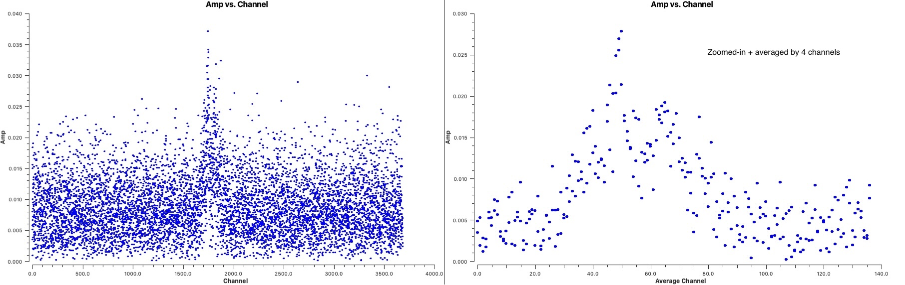
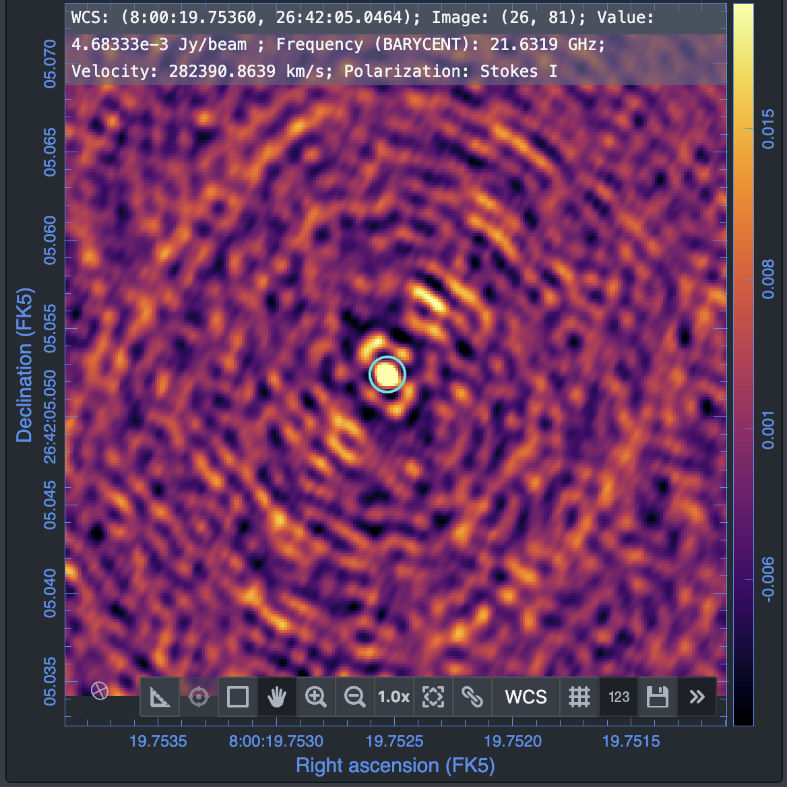
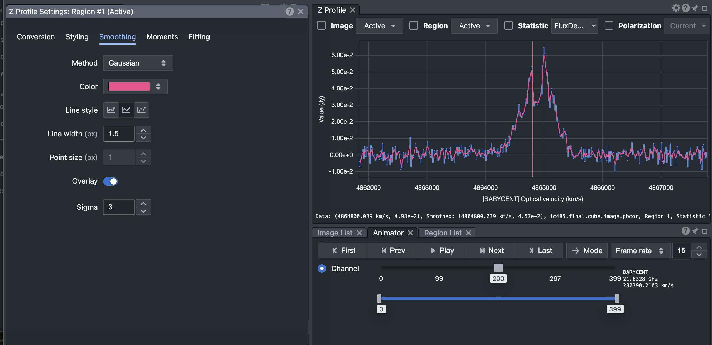

IC 485: H₂O Maser Imaging
Data
In this final tutorial we will work on yet another type of spectral-line source: an H₂O maser associated with IC 485.
The observations were obtained using the Very Long Baseline Array (VLBA) at K-band and represent the highest spatial-resolution dataset of the three spectral-line tutorials.
The data are already self-calibrated and can be downloaded from:
[DOWNLOAD LINK]
After downloading the data, verify that the measurement set is available in your working directory before proceeding.
Table of Contents
- Maser Lines
- Importing into CASA
- Inspect the Data
- Determine the Channels Containing the Line Feature
- Phase Shift the Data
- Average the Channels
- Parameters Related to Velocity and Reference Frames
- Creating a Dirty Cube
- Inspecting the Cube
- Mask Creation
- Producing the Final Cube
- Analysing the Final Cube
- Moment Maps
- Analysis Using the Cube
- Exporting the Results
Maser Lines
Maser emission is produced when radiation is amplified through stimulated emission in molecular gas. Unlike ordinary thermal spectral-line emission, masers can reach extremely high brightness temperatures and are among the brightest radio spectral-line sources known.
Because of their high brightness, masers can be observed at extremely high angular resolution using VLBI arrays, allowing the structure and kinematics of the emitting gas to be investigated on very small spatial scales.
In this tutorial we study H₂O maser emission from IC 485. Unlike the absorption observed in NGC 660 or the thermal molecular emission observed in TW Hya, the signal in this dataset is dominated by strong maser emission.
Importing into CASA
The data were calibrated using AIPS and therefore must first be imported into CASA.
# In CASA
importuvfits(
fitsfile='IC485.CUBO.1',
vis='IC485.ms'
)
Inspect the Data
Before imaging any spectral-line dataset it is important to understand the structure of the observations.
- The science target.
- The number of spectral windows.
- The total number of channels.
- The central observing frequency.
- The antenna configuration.
# In CASA
listobs(
vis='ic485.ms',
)
Did you notice the reference frame reported by listobs?
The spectral axis is already in the barycentric reference frame. This is
because the correction for the Earth's motion around the Sun was applied
during the calibration in AIPS.
Determine the Channels Containing the Line Feature
Before producing a spectral cube we must determine which channels contain the emission line.
As before, we begin by plotting an averaged spectrum.
# In CASA
plotms(
vis='ic485.ms',
xaxis='channel',
yaxis='amp',
avgspw=False,
avgtime='1e9',
avgscan=True,
avgbaseline=True,
scalar=False,
showgui=True,
)
What do you see?
The spectral line is extremely weak and is not easily visible. Try averaging several channels together within the plotms GUI and see whether the line becomes apparent. To do that, enter the number of channels to be averaged in the 'data' panel under 'averaging'
Phase Shift the Data
One reason that the line is difficult to detect is that the source is not located exactly at the phase centre used during the observations.
The coordinates used during the observations were:
RA 08:00:19.76000
Dec +26:42:05.100
More accurate radio observations using the Very Large Array (VLA) by Donald et al. 2017 place the maser centroid at:
RA 08:00:19.75249
Dec +26:42:05.053
The maser is therefore offset from the phase centre by approximately 0.1 arcsec.
To correct for this, we shift the phase centre to the maser position.
# In CASA
os.system('rm -rf ic485shift.ms')
phaseshift(
vis='ic485.ms',
outputvis='ic485shift.ms',
phasecenter='J2000 08h00m19.75249s +26d42m05.053s'
)
Inspecting the Phase-Shifted Data
Plot the spectrum again after applying the phase shift.
# In CASA
plotms(
vis='ic485shift.ms',
xaxis='channel',
yaxis='amp',
avgspw=False,
avgtime='1e9',
avgscan=True,
avgbaseline=True,
scalar=False,
showgui=True,
)
The emission line is now clearly visible even without any additional averaging and is much stronger after averaging.

Also notice that there is essentially no continuum emission in this dataset. Unlike TW Hya and NGC 660, no continuum subtraction is required.
Average the Channels
The dataset contains more than 2000 spectral channels. Since the emission line is broad, we can safely average neighbouring channels to reduce computation time. Let us average 4 channels together.
# In CASA
os.system('rm -rf ic485shift.ave4.ms')
mstransform(
vis='ic485shift.ms',
outputvis='ic485shift.ave4.ms',
datacolumn='all',
chanaverage=True,
chanbin=4
)
What is the velocity resolution of the dataset now? We will use this averaged dataset for the remainder of the tutorial.
Parameters Related to Velocity and Reference Frames
Like NGC 660, IC 485 is an extragalactic source. We therefore use:
outframe='BARY'
veltype='optical'
However, unlike the NGC 660 dataset, the velocity axis has already been shifted into the rest frame of the galaxy during the calibration process in AIPS (using the task CVEL). Therefore the rest frequency corresponds directly to the H₂O transition.
# In CASA
rstfrq='22.2350798GHz'
Creating a Dirty Cube
Before performing any deconvolution it is useful to examine the dirty cube.
A dirty cube is produced by Fourier transforming the visibilities without applying any CLEAN iterations.
- Estimate the image noise.
- Inspect the quality of the data.
- Identify all channels containing emission.
- Determine an appropriate cleaning strategy.
Can you explain why we have chosen:
cell='0.00015arcsec'
imsize=[250,250]
based on what you learnt during the continuum-imaging exercises?
# In CASA
os.system('rm -rf ic485.dirty.cube*')
tclean(
vis='ic485shift.ave4.ms',
imagename='ic485.dirty.cube',
imsize=[250,250],
cell='0.00015arcsec',
perchanweightdensity=True,
specmode='cube',
start=0,
width=1,
outframe='BARY',
veltype='optical',
restfreq=rstfrq,
restoringbeam='common',
pbcor=True,
weighting='briggsbwtaper',
robust=0.5,
niter=0,
interactive=False
)
Inspecting the Cube
First we would like to check the beam size, velocity resolution and other basic properties of the cube.
# In CASA
imhead(
imagename='ic485.dirty.cube.image.pbcor',
)
What is the beam size? What spatial scale does it correspond to at the distance of IC 485? These observations provide extraordinarily high spatial resolution compared to the previous tutorials.
Next we estimate the RMS noise in line-free channels. This provides a quantitative measure of the sensitivity of the observations and will guide our choice of cleaning threshold.
# In CASA
imstat(
'ic485.dirty.cube.image',
chans='1~200'
)
Measure the RMS in several line-free channels or channel ranges. The values should be broadly consistent.
The RMS noise measured for this dataset is approximately:
RMS ≈ 2.8 mJy beam⁻¹Open the dirty cube in CARTA and inspect the emission channel by channel.
Consider the following questions:
- In which channels is the emission visible?
- Is the emission compact or extended?
- Is the emission detected at high significance?
- Does the morphology change across the line profile?
The answers to these questions will guide the cleaning strategy and mask placement.
Because the line is very strong, we will adopt:
threshold = 3 × RMS = 8.4 mJy beam⁻¹# In CASA
thrshld='8.4mJy'
Mask Creation
Before producing the final cube we create a mask defining the region to be cleaned.
This is similar to the procedure used for TW Hya. With the dirty cube open in CARTA, draw a region tightly encompassing the maser emission while excluding any sidelobes.
Save the resulting region file as:
ic485.clean.mask
The CLEAN mask will be used during deconvolution of the final cube.
Producing the Final Cube
Having inspected the dirty cube, estimated the RMS noise and identified the emission channels, we can now perform a full deconvolution.
You may have noticed that the emission is confined to the central region of the image and occupies only a subset of the available channels. Therefore we can reduce the image size and restrict the channel range, substantially reducing the computation time.
We therefore image only channels 250-650 by setting:
start=250
nchan=400
# In CASA
os.system('rm -rf ic485.final.cube*')
tclean(
vis='ic485shift.ave4.ms',
imagename='ic485.final.cube',
imsize=[150,150],
cell='0.00015arcsec',
specmode='cube',
perchanweightdensity=True,
start=250,
nchan=400,
width=1,
outframe='BARY',
veltype='optical',
restfreq=rstfrq,
restoringbeam='common',
pbcor=True,
deconvolver='hogbom',
weighting='briggsbwtaper',
robust=0.5,
niter=100000,
threshold=thrshld,
mask='ic485.clean.mask',
interactive=False
)
After cleaning is complete, inspect the final cube in CARTA.
Analysing the Final Cube
The final science product is:
ic485.final.cube.image.pbcor
Use imhead() to inspect the basic properties of the final
cube.
# In CASA
imhead(
imagename='ic485.final.cube.image.pbcor',
)
Verify that the velocity axis, channel spacing, number of channels and image size are as expected.
Next, inspect the cube in CARTA.
- Step through the channels using the animator.
- Determine the velocity range containing maser emission.
- Examine whether the emission changes spatially with velocity.
- Extract spectra from individual pixels.
- Extract spectra from larger regions and compare them.
- Measure the integrated emission profile.
Does the spectral profile vary spatially, or does it remain broadly consistent across the source?
Moment Maps
You have already learnt two methods for generating moment maps:
- Using CASA (
immoments) in the TW Hya tutorial. - Using CARTA in the NGC 660 tutorial.
Feel free to use either approach for this dataset.
If you choose to use CASA:
# In CASA
os.system('rm -rf ic485.mom*')
immoments(
'ic485.final.cube.image.pbcor',
outfile='ic485.mom',
includepix=[8e-3,100],
mask='ic485.final.cube.mask',
chans='155~242',
moments=[0,1,2]
)
The file ic485.final.cube.mask is produced by
tclean and is useful for restricting the moment-map
calculation to regions of genuine emission.
If you prefer CARTA, follow the procedure demonstrated in the NGC 660 tutorial.

Inspect the resulting moment maps in CARTA.
Analysis Using the Cube
The final cube can now be used for a variety of scientific measurements.
Some possible investigations include:
- Fit a two-dimensional Gaussian to the emission.
- Measure the integrated line intensity.
- Estimate the brightness temperature.
- Calculate the isotropic maser luminosity.

These quantities can be compared with values reported in the literature for other extragalactic H₂O masers.
Exporting the Results
As with the previous tutorials, export the final products to FITS format for further analysis in external software packages.
# In CASA
exportfits(
imagename='ic485.final.cube.image.pbcor',
fitsimage='ic485_final_cube.fits',
velocity=True,
overwrite=True,
)
Similarly export any moment maps that you wish to use for publication, archiving or additional analysis.